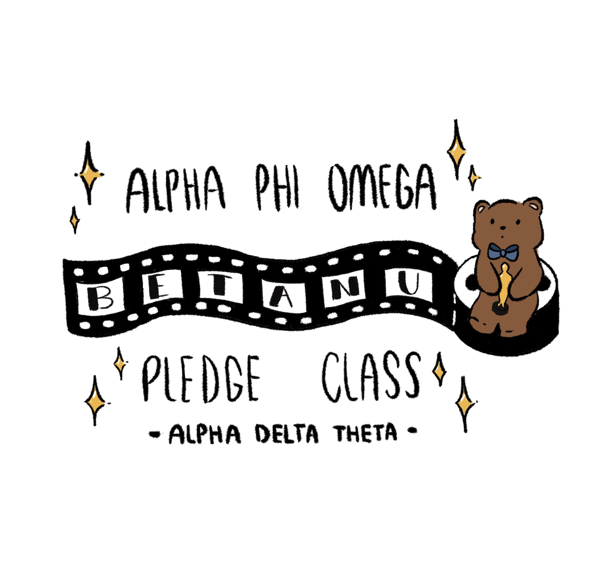
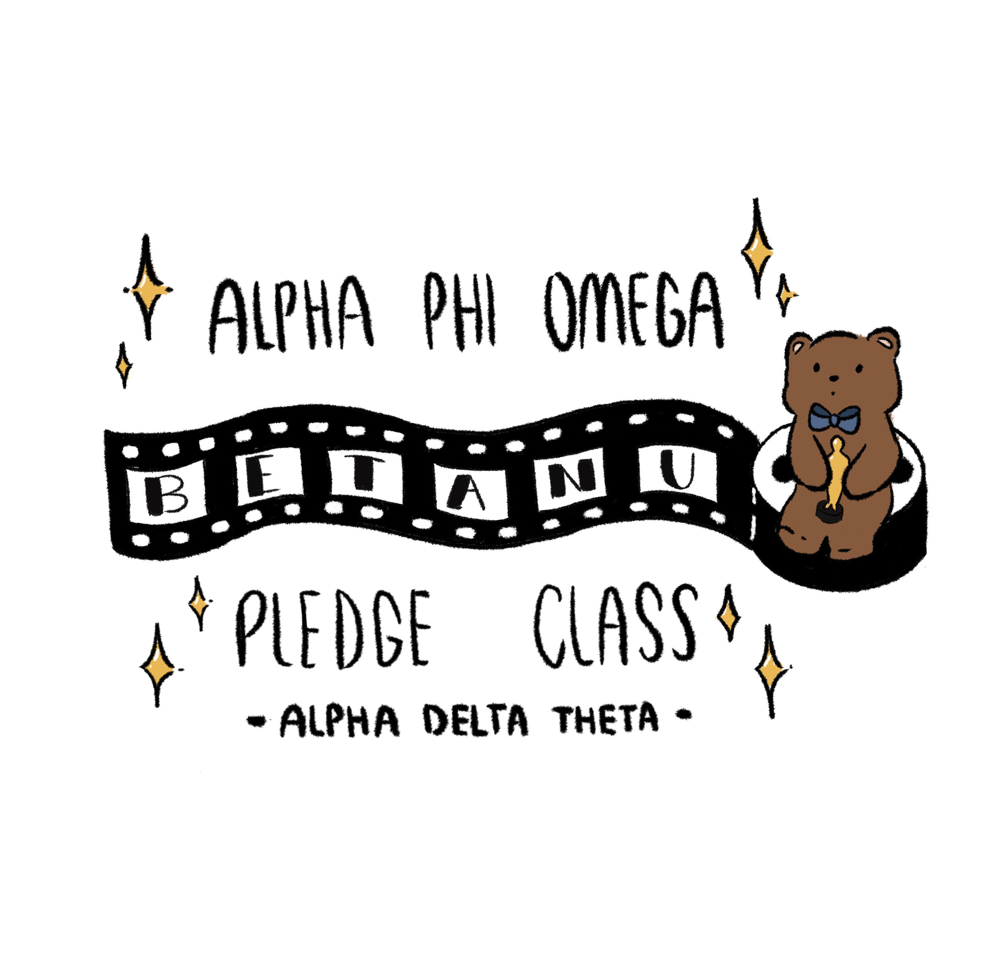
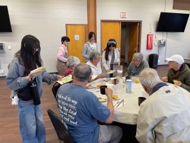
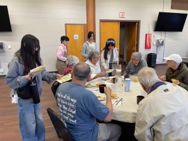
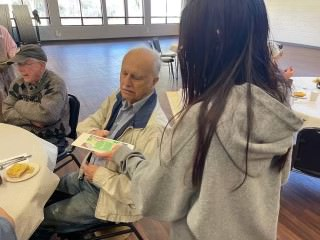
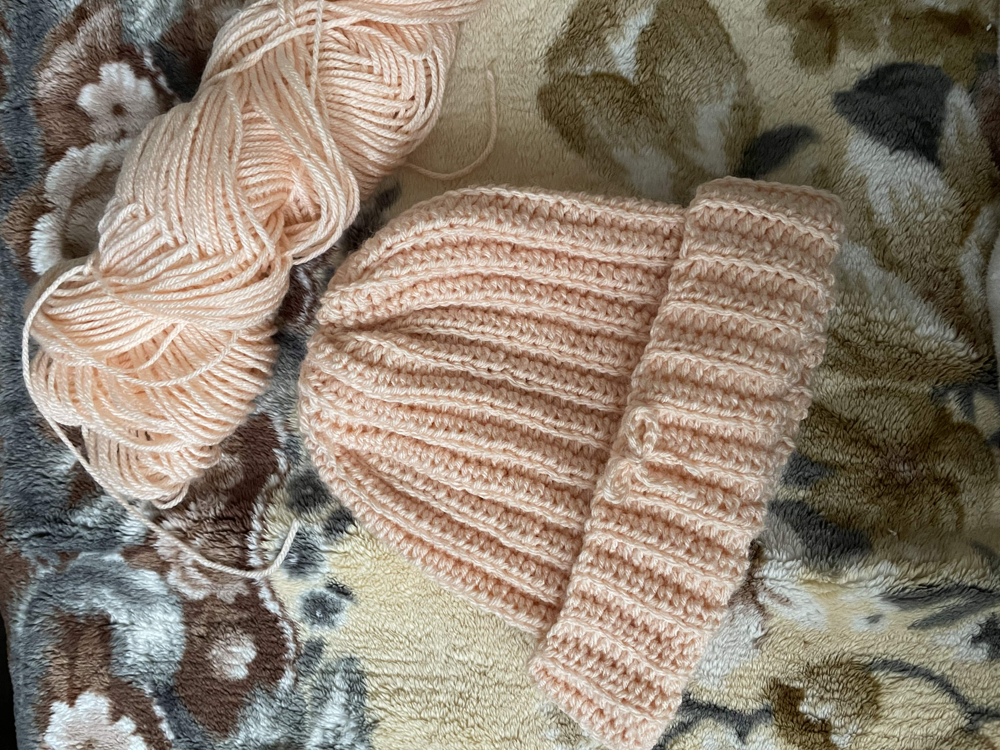
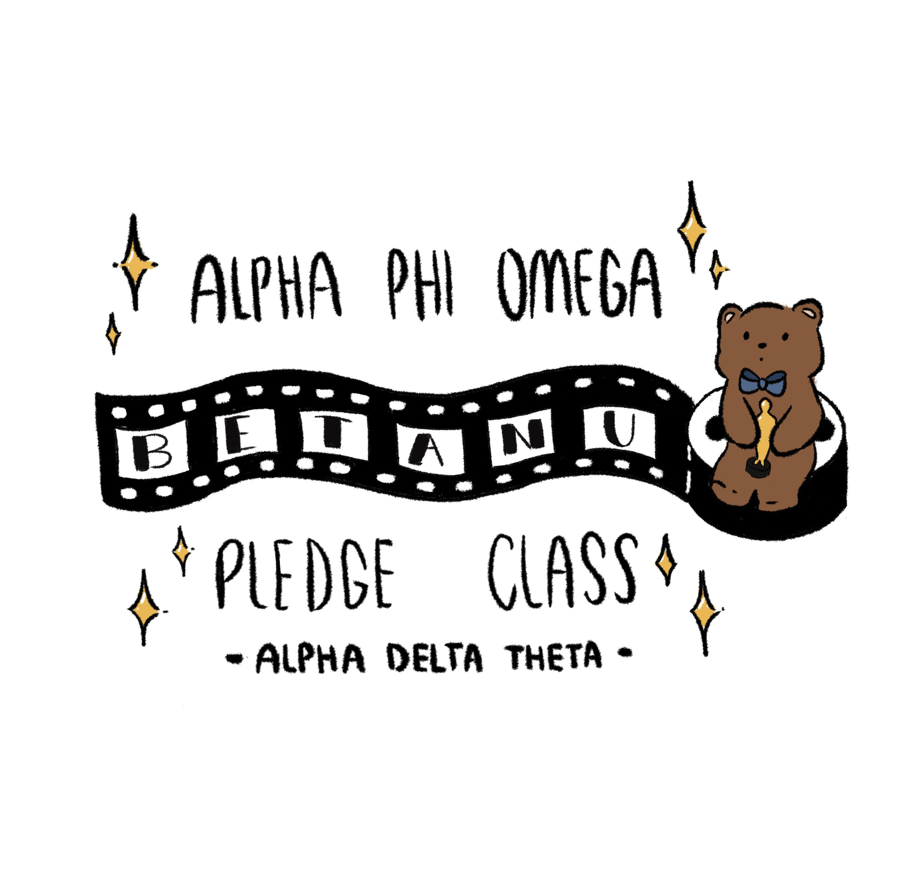
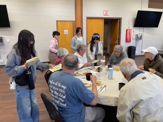
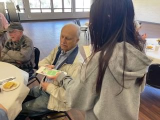
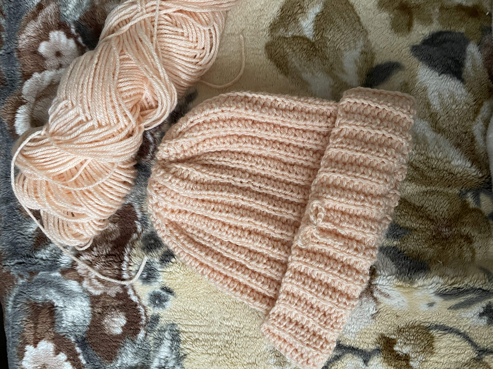

Yana Navarro
Hello! My name is Yana Navarro, and I am currently a first year Biochemistry major at UC Riverside. I am prospective medical school student, looking to pursue a career in Pediatrics. I have always been passionate in medicine and working with children, and I look forward to applying my experiences in the medical field.
Some of my favorite hobbies include digital art and crocheting. I have even applied my hobbies here at UC Riverside! I am a PR chair for the university's Filipino Club, where I handle the social media and have even created the club's merch design. Through crocheting, I have become fond of creating my own clothes such as beanies and tops rather than purchasing them. I have even ran a donation drive for crocheted beanies! I love art and self-expression, and I love using my passions to help my community.
I am also a part of the co-ed community service fraternity Alpha Phi Omega. As a Pledge, I was my class' Pledge President. I was in charge of making sure my class was up-to-date with their Pledging process, and communicating with the Executive Board on our class' progress. Despite the amount of responsibility this role carried - especially with being a first year - I am glad I had this oppurtunity to better my leadership skills, and make new friends along the way!
Experience
Selective Mutism Counselor
• One-on-one training with children ages 4-12, patiently worked with children's boundaries while focusing on improving their social anxiety and speech abilities
• Documented progress of children, effectively communicated progress to lead psychologists and parents
• Oppurtunity to shadow psychologists while effectively applying what I learned as a counselor
Senior Center Volunteer
• Co-lead designer and distributor of 50 handmade greeting cards to a local senior center
• Fostered a conversational atmosphere between seniors and volunteers, while ensuring both parties' boundaries were respected
•Thoroughly reviewed each card making sure it was created with effort and contained appropriate content
Donation Drive Organizer
• Amassed more than 100 crocheted beanies for a non-profit, childhood cancer organization
• Created monthly goals that donation drive must reach; made sure that each participant was meeting their required beanies made
• Coordinated with non-profit organization via email and relayed information to participants through digital documents
Education
UC Riverside
Portfolio
 

 




 